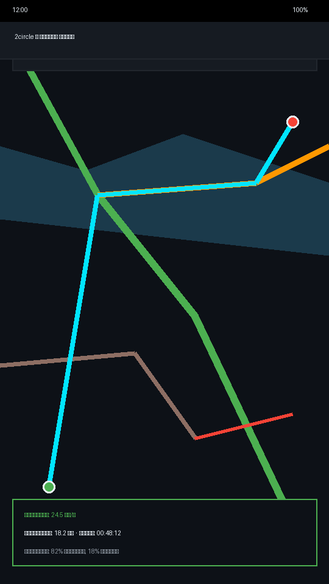
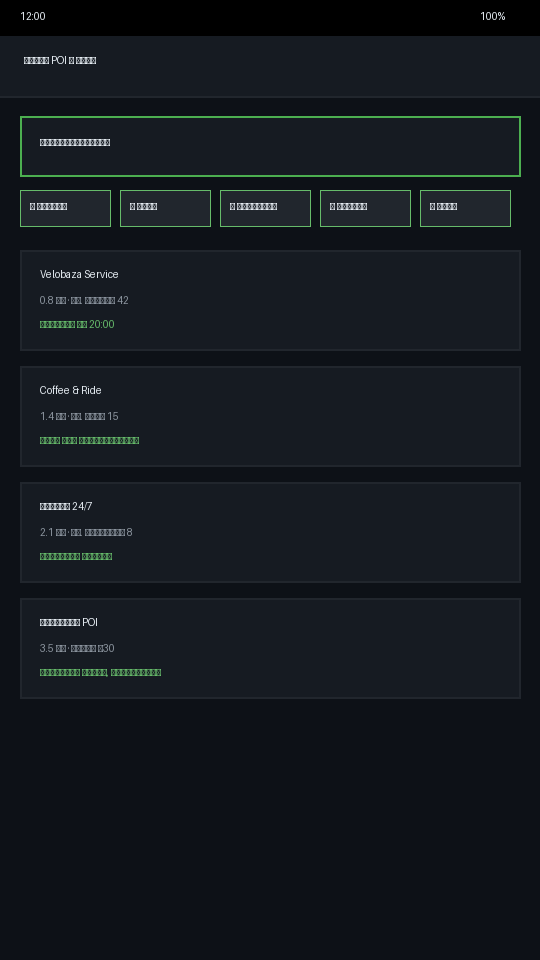
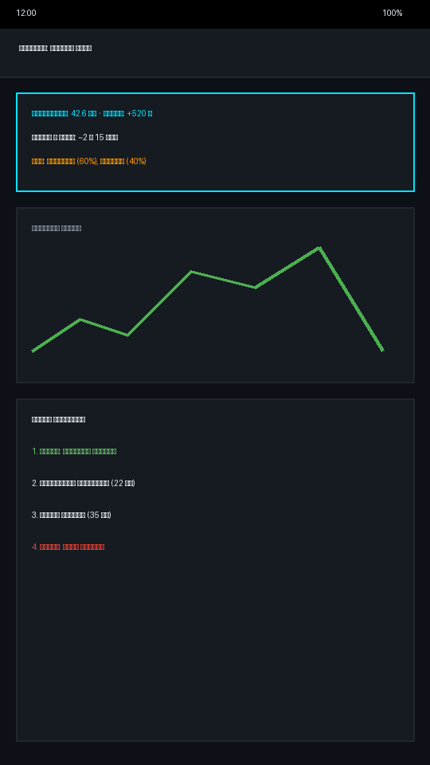
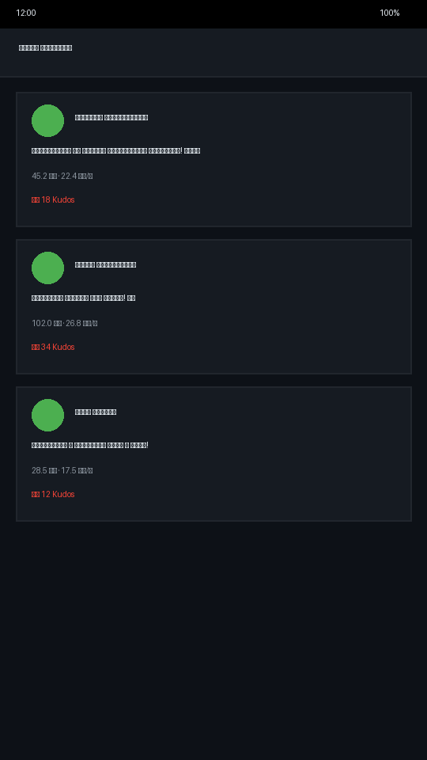

Начните своё путешествие
Скачайте 2circle прямо сейчас и исследуйте новые веломаршруты без зависимости от сети.
Скачать APK (63 МБ)
v2.0 · Android 8.0+ · Бесплатно
Офлайн-карты с раскраской дорог по типу покрытия. Голосовая навигация, BRouter маршруты и запись GPX треков.
Всё, что нужно райдеру в одной автономной системе
Векторные тайлы OpenStreetMap с четкой раскраской дорог по типу покрытия. Качайте регионы и катайтесь без связи.
Подсказки маневров и поворотов через встроенный TTS движок прямо во время поездки на экране или в наушниках.
Аптеки, кафе, заправки, веломастерские и водоёмы на карте. Мгновенный поиск и построение маршрута в 1 тап.
Надежная запись поездок с защитой от сбоев, экспортом и импортом GPX файлов для обмена с друзьями.
Анализируйте графики подъемов, спуск, среднюю скорость и структуру покрытия перед началом маршрута.
Делитесь заездами в общей ленте, получайте респекты (Kudos) с анимациями и копите достижения.
Знайте заранее, что вас ждёт на пути. Каждая дорога окрашена в уникальный цвет в зависимости от её реального состояния.
Скриншоты реальной работы 2circle на Android




Скачайте 2circle прямо сейчас и исследуйте новые веломаршруты без зависимости от сети.
v2.0 · Android 8.0+ · Бесплатно